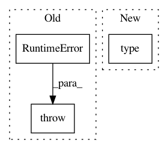

5928cb36cc84496ff3521e41b24dd2e15c7f13ba,qcengine/programs/intf_dftd3/runner.py,,run_dftd3_from_arrays,#Any#Any#Any#Any#Any#Any#Any#,85
Before Change
except Exception as err:
jobrec["success"] = False
jobrec["error"] += repr(err)
raise RuntimeError(err) from err
else:
jobrec["success"] = True
jobrec["qcvars"]["CURRENT ENERGY"] = copy.deepcopy(jobrec["qcvars"]["DISPERSION CORRECTION ENERGY"])
if jobrec["driver"] == "gradient":
After Change
import traceback
jobrec["success"] = False
jobrec["error"] = {
"error_type": type(exc).__name__,
"error_message": "".join(traceback.format_exception(*sys.exc_info())),
}
raise exc
In pattern: SUPERPATTERN
Frequency: 3
Non-data size: 3
Instances
Project Name: MolSSI/QCEngine
Commit Name: 5928cb36cc84496ff3521e41b24dd2e15c7f13ba
Time: 2019-02-18
Author: lori.burns@gmail.com
File Name: qcengine/programs/intf_dftd3/runner.py
Class Name:
Method Name: run_dftd3_from_arrays
Project Name: streamlit/streamlit
Commit Name: 091b3739acb2280a84da3b275d4ad6675ad2e658
Time: 2018-10-02
Author: thiagot@gmail.com
File Name: lib/streamlit/generic_binary_proto.py
Class Name:
Method Name: marshall
Project Name: dmlc/gluon-cv
Commit Name: 4b8716fd4bd6f462a9db9eee958f2508576ec019
Time: 2018-06-15
Author: cheungchih@gmail.com
File Name: gluoncv/utils/metrics/coco_detection.py
Class Name: COCODetectionMetric
Method Name: __init__